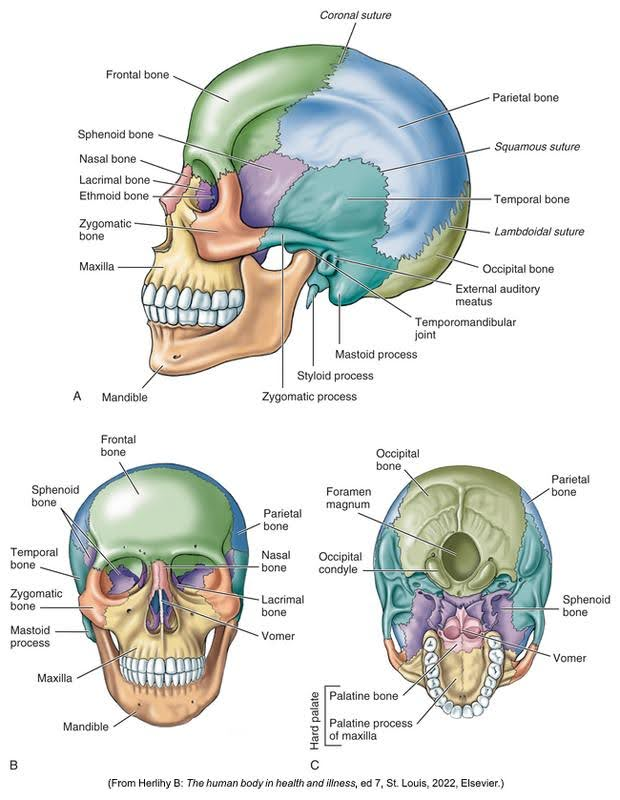
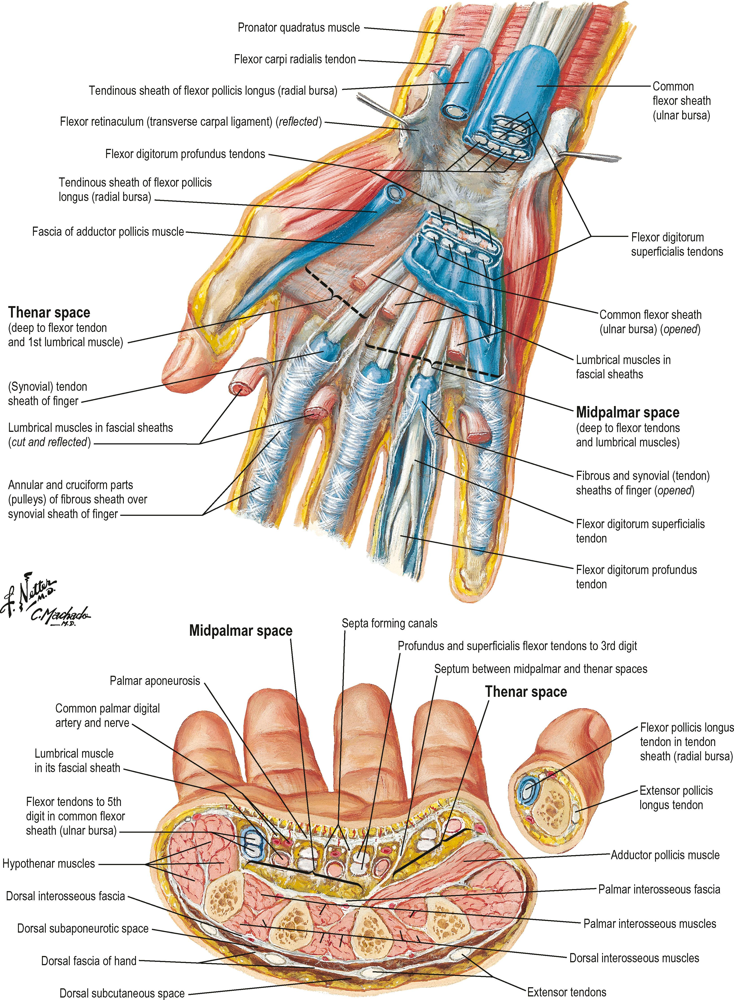
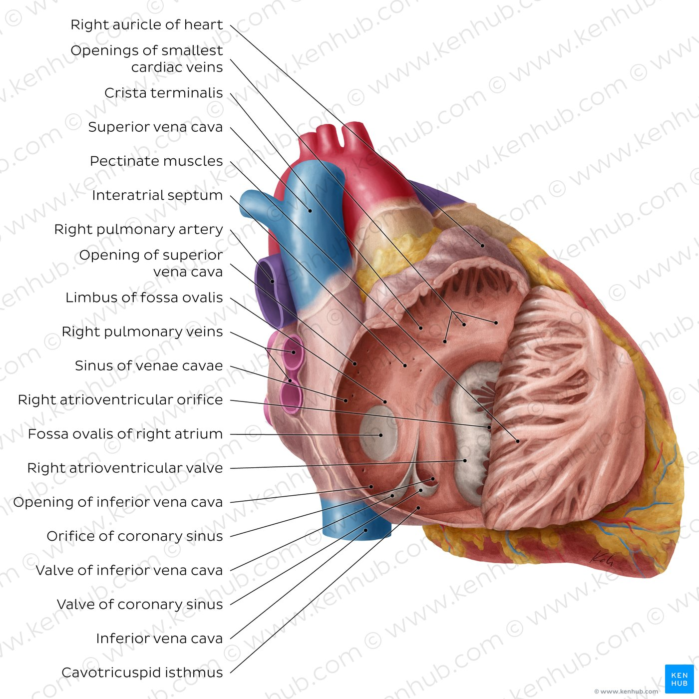

Head Anatomy
The human skull consists of the cranial and facial bones. It encases and protects the brain and supports the structures of the face.
Source: Licensed educational resource
Major Components of the Skull
The skull is divided into two main sections:
- Cranium: Houses and protects the brain, composed of 8 bones
- Facial Bones: 14 bones that form the structure of the face
Together, these structures provide attachment points for muscles and form the cavities for sensory organs like the eyes, nose, and ears.
Hand Anatomy
The human hand is composed of 27 bones and is capable of a wide range of movement and dexterity, making it one of the most versatile anatomical structures.
Source: Anatomy and Biomechanics of the Hand, Clinical Publications
Key Structures of the Hand
The hand consists of three main types of bones:
- Carpals: Eight small bones that form the wrist and base of the hand, arranged in two rows of four bones each
- Metacarpals: Five bones that form the palm of the hand
- Phalanges: Fourteen bones that make up the fingers (three in each finger, two in the thumb)
The hand also contains numerous muscles, tendons, ligaments, and nerves that enable its complex movements and sensory capabilities.
Heart Anatomy
The human heart is a muscular organ responsible for pumping blood through the circulatory system, ensuring the delivery of oxygen and nutrients to tissues while removing waste products.
Source: KenHub Anatomy Library
Structure and Function of the Heart
The heart consists of four chambers and several key components:
- Chambers:
- Right Atrium: Receives deoxygenated blood from the body
- Right Ventricle: Pumps deoxygenated blood to the lungs
- Left Atrium: Receives oxygenated blood from the lungs
- Left Ventricle: Pumps oxygenated blood to the body
- Valves:
- Tricuspid Valve: Between right atrium and right ventricle
- Pulmonary Valve: Between right ventricle and pulmonary artery
- Mitral Valve: Between left atrium and left ventricle
- Aortic Valve: Between left ventricle and aorta
- Major Blood Vessels:
- Superior and Inferior Vena Cava: Return blood to the right atrium
- Pulmonary Arteries: Carry deoxygenated blood to the lungs
- Pulmonary Veins: Return oxygenated blood to the left atrium
- Aorta: The largest artery, distributes oxygenated blood to the body
The heart beats approximately 100,000 times per day, pumping about 2,000 gallons of blood through the body. Its rhythmic contractions are controlled by electrical impulses generated in the sinoatrial (SA) node, often called the heart's natural pacemaker.